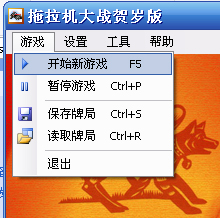
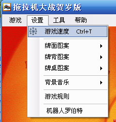
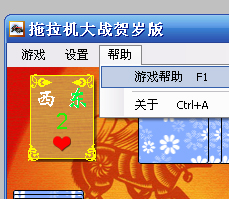

游戏

开始新游戏：开始新的游戏，从2打起
暂停游戏：可以暂停游戏，再点击此菜单将继续游戏
保存牌局：将游戏的状态保存起来，包括各家在打几，庄家是谁，目前打几
读取牌局：读取保存的牌局，重新发牌
设置

游戏速度：可以设置游戏的每个步骤的速度，左边为快速，右边为慢速
牌面图案：有三种图案可供选择，你也可以选择自己制作的牌面
牌背图案：有三种背面图可供选择
牌桌图案：可以选择背景图案,图案大小为631*470,如果不是这个尺寸，图片将进行缩放
背景音乐：可以设置打牌时的背景音乐，支持wav、mp3、midi三种音乐格式，可随机、循环播放
游戏规则：可以设置必打、增强（一J到底、一Q到半）、揭底、扣底、亮主等规则
机器人罗伯特：这个机器人可以代替您打牌
工具
拖拉机伴侣：使用这个工具可以制作您自己的牌面，将您的数码照片嵌入到游戏中
帮助

游戏帮助:打开帮助文件
关于:开发者介绍